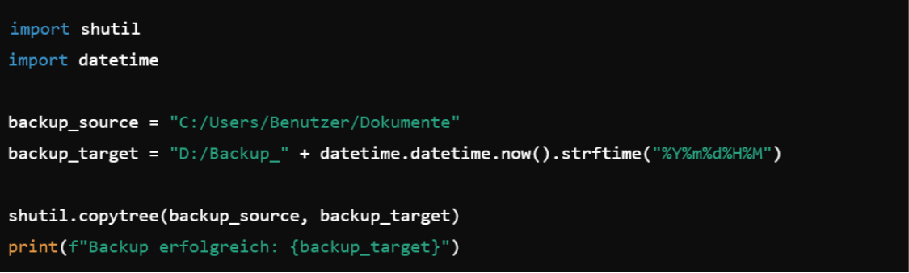

Was sind Backups?
Backup ist das bewusste und systematische Kopieren und Speichern wichtiger Daten oder Systeme an verschiedenen Orten oder auf verschiedenen Medien, um Datenverlust oder -beschädigung zu verhindern.
-
Warum sollte man Backups machen?
- Verlust von Daten verhindern:
Durch Sicherung wird sichergestellt, dass bei Datenverlust eine Kopie verfügbar ist.
- Daten wiederherstellen:
Im Falle von Datenbeschädigung oder -löschung können die Daten schnell aus der Sicherung wiederhergestellt werden.
- Geschäftskontinuität gewährleisten:
Für Unternehmen und kritische Systeme ist die Sicherung ein wichtiger Mechanismus, um nach einem Ausfall den Betrieb schnell wieder aufnehmen zu können.
-
Schau dir diesen Code für eine Datei backup.py an.

- Improt Modul
- Definieren Quell- und Zielpfade
- Kopieren des Verzeichnisses
- Ausgabe des Erfolgs
-
Gibt es einen Weg ein Script automatisch wiederholt auszuführen? Also bspw. einmal pro Tag um 2 Uhr? Kannst du dir erklären wie das automatische Backups ermöglicht?
Ja, es gibt verschiedene Möglichkeiten, ein Skript automatisch wiederholt auszuführen:
- Verwenden Sie den Taskplaner unter Windows:
Der Taskplaner kann verwendet werden, um Skripte zu einem bestimmten Zeitpunkt oder in regelmäßigen Abständen auszuführen.
- Cron-Jobs unter Linux:
Linux-Systeme verwenden Cron-Jobs, um Aufgaben zu planen und automatisch auszuführen.
- Externe Dienste oder Tools:
Es gibt auch externe Dienste oder Tools, die die automatische Ausführung von Skripten ermöglichen, z. B. Cloud-Dienste oder spezielle Backup-Software.
Die automatische Ausführung von Backups ermöglicht es, regelmäßig Sicherungen wichtiger Daten oder Systeme durchzuführen, ohne dass Benutzereingriffe erforderlich sind. Dies stellt sicher, dass die Daten regelmäßig gesichert werden und im Falle eines Problems schnell wiederhergestellt werden können.